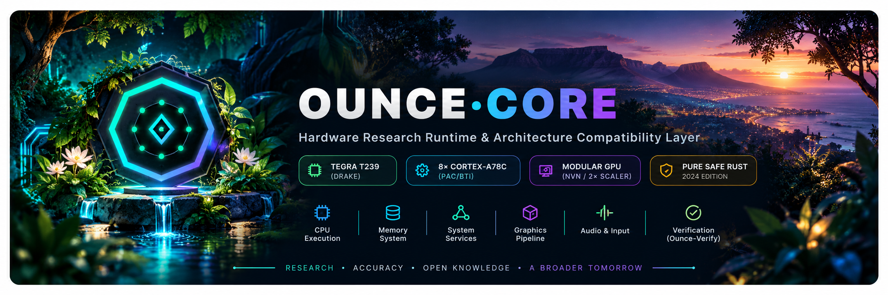

Run ARM64 programs anywhere, and prove the answer matches real hardware
Ounce-Core is an open-source ARM64 execution lab written in safe Rust. It runs a program on three CPU engines (an interpreter, a JIT and native execution) and compares the result with a reference build on real hardware. When they disagree it points to where.
In one week, running unmodified open-source programs (LZ4, xxHash, SQLite, Lua) and comparing against an Apple Silicon machine found a prefetch instruction silently corrupting registers, two floating-point instructions with the wrong sign, and a long list of missing vector instructions. All were fixed with tests. The project began as a Switch homebrew runtime; that is no longer its goal.
Get started Browser playground Check your library See results Read research paper ContributeWhat is Ounce-Core?
Ounce-Core is free, open-source AArch64 (ARM64) software written in Rust. Its core idea is differential testing: build the same program for your computer and for ARM64, run both, and diff the output. It is not a fast emulator and does not compete with QEMU on speed. Its evidence is bounded agreement with real-hardware references on recorded tests, not a proof of general correctness. Investigations retain small, shareable reproductions through the shipped ounce-diagnose v0.2.0 toolkit. Read the vision and roadmap and the limits before relying on a result.
Technical details: getting started, verification method and results, ounce-diagnose v0.2.0 CLI, failure-to-reproduction walkthrough, audio-channel case, add a program as a test, contributing.
Getting started
Follow the steps below to install Ounce-Core, run your first program, diagnose failures, and report reproducible findings.
1. Install
Build from source using Rust 1.85+ (edition 2024) on Linux, macOS or Windows:
# Clone repository
git clone https://github.com/hffgzktbcc-blip/ounce-core.git
cd ounce-core
# Build runtime binary
cargo build --release
# Optional: compile native execution for ARM64 hosts (Apple Silicon / Linux ARM64)
cargo build --release --features "nce native-jit"2. Run your first program
Verify that your build works by running the self-checks, then execute an AArch64 binary:
# Run self-checks and 25-stage verification harness
cargo test --release
cargo run --release -- test
# Option A: Run a static AArch64 Linux ELF binary
cargo run --release -- run-elf tests/linux-elf/bin/hello.elf
# Option B: Run a homebrew AArch64 NRO fixture
cargo run --release -- run tests/fixtures/nro/hello/hello.nro fixture
# Option C: Open the local interactive verification workbench
cargo run --release -- ui3. When something fails: diagnosis and reproduction
When an execution halts, diverges or encounters an unsupported instruction:
- Inspect error output: Unimplemented opcodes, unhandled SVCs, or memory faults output the program counter (PC), opcode word, and register state. If execution exceeds the default instruction cap, increase it with
OUNCE_NRO_BUDGET=100000000. - Pinpoint hardware divergence: On an AArch64 host, run
divergeto compare execution against the host processor and identify the first differing instruction:target/release/ounce-core diverge path/to/program.nro - Package a reproduction dossier: Use the diagnosis CLI to generate a portable dossier (
diagnosis.json,comparison.json,REPLAY.md) without private paths or credentials:
See the diagnosis CLI guide and failure-to-reproduction walkthrough.python3 scripts/diagnosis_cli.py example --output ./my-diagnosis
4. How to report findings
- Emulation discrepancies: If an outside program computes a different result in Ounce-Core than on real ARM64 hardware or a host reference build, open an issue using the emulation bug template. Include your Git commit SHA, CPU engine, expected output, and the first differing line.
- Differential test suite runs: Run
python3 scripts/verify_differential.py --json my-results.jsonon an ARM64 computer and report your findings on issue #248 using the external test report template. - Propose a new test program: Suggest an open-source library or test using the program request template.
- Guardrails: Do not submit or attach retail keys, copyrighted firmware, commercial game ROMs, or proprietary SDK files. Only open-source or synthetic test material is accepted.
Verify
Diff supported programs and instruction test cases against recorded real ARM64 references, with explicit unsupported cases.
Run
User-mode ARM64 in memory-safe Rust. A bounded static Linux AArch64 ELF runner has landed; 18 pinned open-source programs run as static ELFs and match a host build and qemu-user on Tier-3 and Tier-4. One (wasm3) does not run yet, and arbitrary Linux applications remain unsupported.
Debug and learn
Compare engines, package retained failure-to-reproduction dossiers with the shipped ounce-diagnose v0.2.0 toolkit, and explore the merged interactive verification lab. General browser-based program debugging is not established.
Current status
The status page lists what is proven and what is not, with links to the evidence. Rerun it with the reproduction guide and read the limits. Coverage is partial: many vector, floating-point and system instructions are still undecoded or untested.
Go deeper
Join the contributor community · Evidence-first AArch64 research paper · ounce-diagnose v0.2.0 release · Diagnosis CLI guide · Press & research kit · Beyond the First Frame · Latest evidence status · Reproduce it yourself · What this does not prove
Architecture and subsystem matrix · Provenance register · Contributing
Boundary: no Switch or Switch 2 compatibility is claimed. Switch 2 work is parked per PLAN.md, and the earlier Switch work stays as a regression test set. Ounce-Core is unaffiliated with Nintendo or NVIDIA. Do not submit proprietary firmware, retail keys or game content.